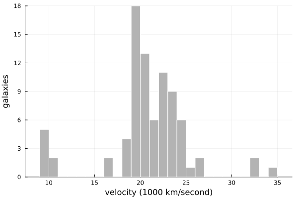
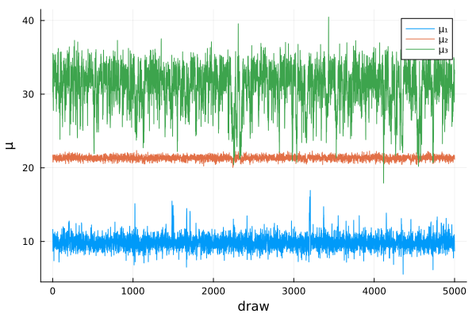

Finite mixture models
This example replicates Section 4.2.1 of Chib (1995): Gaussian mixture models for the velocities of 82 galaxies. There are three parameter blocks, $\mu$, $\sigma^2$ and $q$, and latent component indicators $z$, so the posterior ordinate needs two reduced Gibbs runs. The example also shows how the estimator fails when the sampler does not visit all modes of the posterior.
using MargLikeGibbsOutput, Distributions, LinearAlgebra, Random, Plots
using Distributions: logfactorialData
Velocities in 1000 km/second (Table 3 of the paper).
y = [9172, 9350, 9483, 9558, 9775, 10227, 10406, 16084, 16170, 18419, 18552, 18600,
18927, 19052, 19070, 19330, 19343, 19349, 19440, 19473, 19529, 19541, 19547, 19663,
19846, 19856, 19863, 19914, 19918, 19973, 19989, 20166, 20175, 20179, 20196, 20215,
20221, 20415, 20629, 20795, 20821, 20846, 20875, 20986, 21137, 21492, 21701, 21814,
21921, 21960, 22185, 22209, 22242, 22249, 22314, 22374, 22495, 22746, 22747, 22888,
22914, 23206, 23241, 23263, 23484, 23538, 23542, 23666, 23706, 23711, 24129, 24285,
24289, 24366, 24717, 24990, 25633, 26960, 26995, 32065, 32789, 34279] / 1000
histogram(y; bins = 40, label = "", xlabel = "velocity (1000 km/second)", ylabel = "galaxies", color = :gray70, linecolor = :white)
Model
The mixture with $d$ components is
\[f(y \mid \theta) = \prod_{i=1}^n \sum_{j=1}^d q_j\, \phi(y_i \mid \mu_j, \sigma_j^2),\]
with independent priors $\mu_j \sim N(\mu_0, A^{-1})$, $\sigma_j^2 \sim IG(\nu_0/2, \delta_0/2)$ and $q \sim \text{Dirichlet}(\alpha)$.
prior(d) = (μ₀ = 20.0, A = 1 / 100, ν₀ = 6.0, δ₀ = 40.0, α = ones(d))Given the indicators $z_i \in \{1, \dots, d\}$ of the component that each observation belongs to, all full conditionals are standard. With $n_j$ the number of observations in component $j$ and $\delta_j = \sum_{i: z_i = j} (y_i - \mu_j)^2$,
\[\begin{aligned} \mu_j \mid y, z, \sigma^2 &\sim N(\hat\mu_j, B_j), \qquad B_j = (A + n_j/\sigma_j^2)^{-1}, \quad \hat\mu_j = B_j \Big(A\mu_0 + \sigma_j^{-2} \sum_{i: z_i = j} y_i\Big), \\ \sigma_j^2 \mid y, z, \mu &\sim IG\big((\nu_0 + n_j)/2, (\delta_0 + \delta_j)/2\big), \\ q \mid z &\sim \text{Dirichlet}(\alpha_1 + n_1, \dots, \alpha_d + n_d), \\ \Pr(z_i = j \mid y, \theta) &\propto q_j\, \phi(y_i \mid \mu_j, \sigma_j^2). \end{aligned}\]
The paper also considers models where the variance is the same in all components. Then $\sigma^2$ is a scalar with full conditional $IG\big((\nu_0 + n)/2, (\delta_0 + \sum_j \delta_j)/2\big)$. The helper variances lets the other conditionals work for both cases.
variances(σ², d) = σ² .* ones(d)
members(z, j) = findall(==(j), z)
function μ_conditional(state, y, prior)
d = length(state.q)
σ² = variances(state.σ², d)
n = [count(==(j), state.z) for j in 1:d]
B = @. 1 / (prior.A + n / σ²)
μ̂ = [B[j] * (prior.A * prior.μ₀ + sum(y[members(state.z, j)]) / σ²[j]) for j in 1:d]
return MvNormal(μ̂, Diagonal(B))
end
δ(state, y, j) = sum(abs2, y[members(state.z, j)] .- state.μ[j])
σ²_conditional(state, y, prior) = product_distribution(
[InverseGamma((prior.ν₀ + count(==(j), state.z)) / 2, (prior.δ₀ + δ(state, y, j)) / 2)
for j in eachindex(state.μ)])
σ²_conditional_equal(state, y, prior) = InverseGamma((prior.ν₀ + length(y)) / 2,
(prior.δ₀ + sum(j -> δ(state, y, j), eachindex(state.μ))) / 2)
q_conditional(state, y, prior) =
Dirichlet(prior.α .+ [count(==(j), state.z) for j in eachindex(state.q)])
function z_conditional(state, y, prior)
components = Normal.(state.μ, sqrt.(variances(state.σ², length(state.q))))
return product_distribution([Categorical(normalize(state.q .* pdf.(components, yᵢ), 1)) for yᵢ in y])
endThe log-likelihood is the mixture density with the indicators summed out.
loglik(θ, y) = loglikelihood(
MixtureModel(Normal.(θ.μ, sqrt.(variances(θ.σ², length(θ.q)))), θ.q), y)
logprior(θ, prior) = sum(logpdf.(Normal(prior.μ₀, 1 / sqrt(prior.A)), θ.μ)) +
sum(logpdf.(InverseGamma(prior.ν₀ / 2, prior.δ₀ / 2), θ.σ²)) + logpdf(Dirichlet(prior.α), θ.q)
mixture(σ²_conditional) = GibbsModel(
conditionals = (μ = μ_conditional, σ² = σ²_conditional, q = q_conditional),
latents = (z = z_conditional,); loglik, logprior)
init(d, σ²) = (μ = collect(range(10, 30, d)), σ² = σ², q = fill(1 / d, d))Marginal likelihoods
The order of the blocks gives the decomposition
\[\pi(\theta^* \mid y) = \pi(\mu^* \mid y)\, \pi(\sigma^{2*} \mid y, \mu^*)\, \pi(q^* \mid y, \mu^*, \sigma^{2*}).\]
The first ordinate is estimated from a run of the full sampler, the second from a run with $\mu$ fixed at $\mu^*$, and the third from a run with both $\mu$ and $\sigma^2$ fixed. As in the paper, $\theta^*$ is the draw with the highest posterior density, and each run has 5000 draws. The three models and their log marginal likelihoods in Table 4 are
models = [
("Two components, equal variances", mixture(σ²_conditional_equal), init(2, 4.0), -240.464),
("Three components, equal variances", mixture(σ²_conditional_equal), init(3, 4.0), -228.620),
("Three components, unrestricted", mixture(σ²_conditional), init(3, fill(4.0, 3)), -224.138),
]
rng = Xoshiro(1995)
estimates = map(models) do (name, model, start, chib1995)
estimate = chib(rng, model, y, prior(length(start.q)), start;
ndraws = 5_000, burnin = 500, θstar = posteriormode)
println(rpad(name, 36), estimate, " Chib (1995): ", chib1995)
estimate
endTwo components, equal variances ChibEstimate(log marginal likelihood = -240.439, NSE = 0.0053) Chib (1995): -240.464
Three components, equal variances ChibEstimate(log marginal likelihood = -228.62, NSE = 0.0069) Chib (1995): -228.62
Three components, unrestricted ChibEstimate(log marginal likelihood = -228.611, NSE = 0.028) Chib (1995): -224.138The first two estimates agree with Table 4, but the third does not.
Label switching
The third entry of Table 4 is the one that Neal (1999) showed to be wrong. But the estimates above are not right either. A mixture with $d$ components has $d!$ identical posterior modes that differ only in the labelling of the components, and the identity behind the estimator requires that the Gibbs sampler visits all of them. Here it stays in one, as the draws of $\mu$ from the three-component model show:
name, model, start, _ = models[3]
draws = gibbs(rng, model, y, prior(3), start; ndraws = 5_000, burnin = 500)
plot(reduce(hcat, [draw.μ for draw in draws])'; label = ["μ₁" "μ₂" "μ₃"], xlabel = "draw", ylabel = "μ")
The sampler therefore overestimates the posterior ordinate by a factor $d!$, and the log marginal likelihood is too low by $\ln d!$. Adding it back gives
for ((name, _, start, _), estimate) in zip(models, estimates)
println(rpad(name, 36), round(estimate.logmarglik + logfactorial(length(start.q)); digits = 3))
endTwo components, equal variances -239.746
Three components, equal variances -226.828
Three components, unrestricted -226.82These agree with brute-force averages of the likelihood over $10^8$ draws from the prior, which give -239.76, -226.84 and -226.80. The correction is only valid because the modes are well separated here, so that the sampler never switches labels. With occasional switching the estimate is somewhere in between and unreliable.